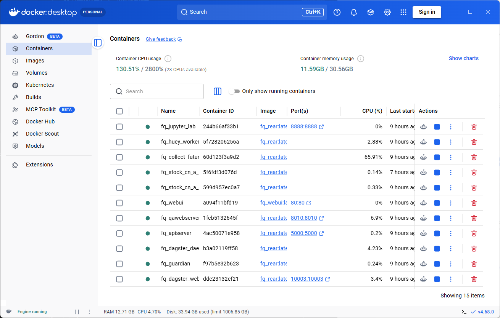
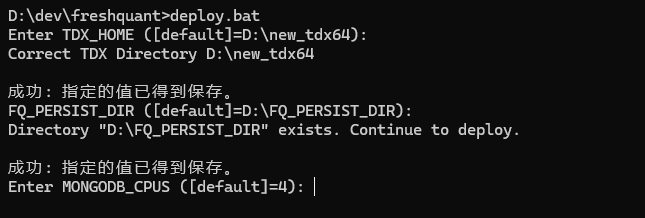
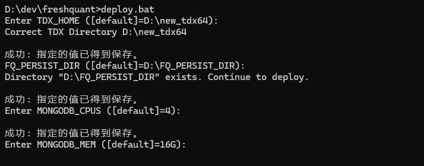
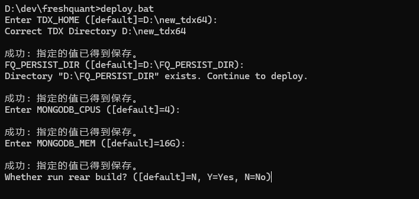
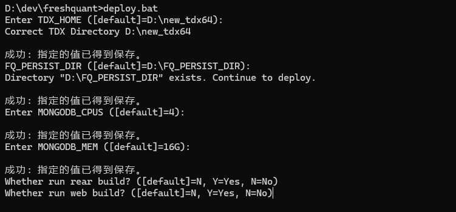
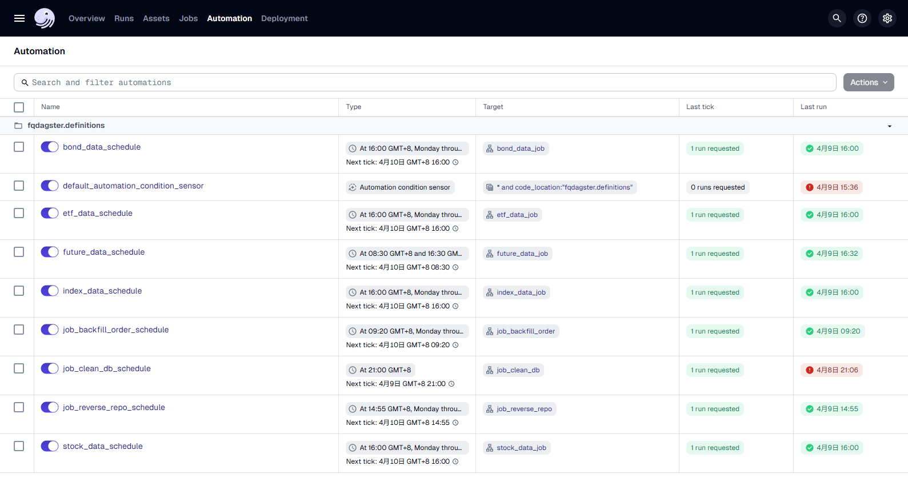
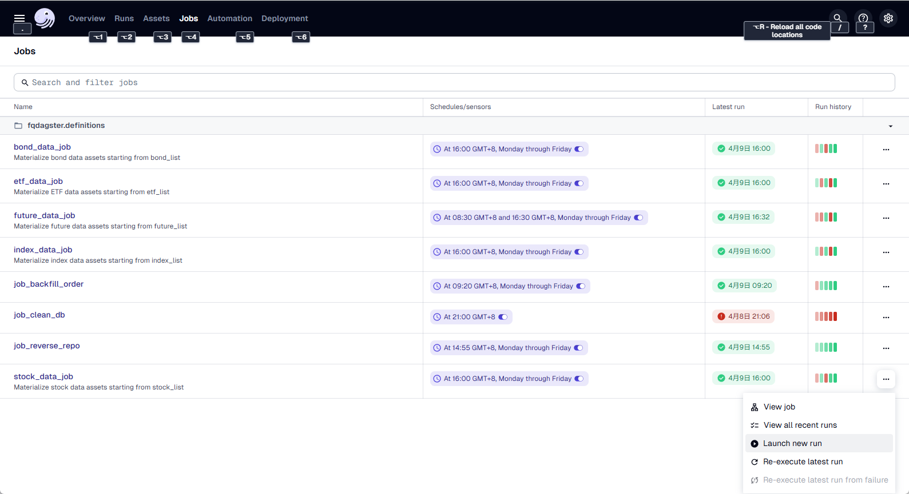

番茄量化专业版¶
FQ量化环境Docker安装部署指南¶
由于在Windows Docker Desktop上使用，因此一些命令遵循Windows的风格。
系统环境准备步骤¶

Windows的CPU虚拟化/虚拟机平台/WSL¶
首先确认CPU的虚拟化功能已开启。打开任务管理器，切换到性能的CPU选项卡，查看CPU虚拟化是否已开启。

如果未开启，请进入电脑的BIOS设置开启虚拟化。根据电脑主板的不同，请自行找到相应的配置选项进行修改。
分别开启电脑的虚拟化平台和Linux子系统服务，在Powershell中执行以下命令。
Enable-WindowsOptionalFeature -Online -FeatureName VirtualMachinePlatform -All -NoRestart
Enable-WindowsOptionalFeature -Online -FeatureName Microsoft-Windows-Subsystem-Linux -All -NoRestart
也可以使用以下dism命令在cmd中开启虚拟化和Linux子系统。
dism.exe /online /enable-feature /featurename:VirtualMachinePlatform /all /norestart
dism.exe /online /enable-feature /featurename:Microsoft-Windows-Subsystem-Linux /all /norestart
安装过程中如果需要重启电脑，请按照提示操作。
如果还没有安装WSL，用下面的命令安装WSL。
winget install --id Microsoft.WSL
或者是升级到WSL的最新版本。
winget upgrade --id Microsoft.WSL
更新WSL核心到最新版本（效果和winget upgrade --id Microsoft.WSL一样）。
wsl --update
安装 Windows Docker Desktop¶
从Docker官网下载Docker Desktop并安装，建议基于WSL2进行安装。这种方式比之前的版本更稳定。安装完成后，系统托盘区会出现一个船形图标，双击即可打开Docker Desktop。
也可以用下面的命令来安装。
winget install --id Docker.DockerDesktop

至此，Docker环境已经安装完成。
请记得配置镜像加速器，推荐使用阿里云的镜像加速器。需要注册并登录阿里云账号，在容器镜像服务中获取镜像加速器地址。务必配置加速器，否则镜像拉取速度会非常慢。
找到齿轮按钮打开设置。

在设置中添加镜像加速器地址，可以加速下载。
也可以使用其他加速地址，例如：
{
"builder": {
"gc": {
"defaultKeepStorage": "20GB",
"enabled": true
}
},
"experimental": false,
"log-driver": "json-file",
"log-opts": {
"max-file": "3",
"max-size": "10m"
},
"registry-mirrors": [
"https://dockerproxy.com",
"https://mirror.baidubce.com",
"https://docker.m.daocloud.io",
"https://docker.nju.edu.cn",
"https://docker.mirrors.sjtug.sjtu.edu.cn"
]
}
接下来开始安装量化系统。
安装UV¶
FQ 的安装使用 uv 作为 Python 环境和包管理工具。首先需要安装 uv，用如下命令可以直接安装。
winget install --id astral-sh.uv
同时确保已安装 Visual Studio Community 2026，并勾选了 C++ 桌面开发组件。FQ 的 C++ 代码需要用它来编译。
winget install --id Microsoft.VisualStudio.Community
安装时务必勾选 C++ 桌面开发 工作负载。
设置环境变量¶
在环境变量中设置以下变量，系统运行时会用到它们。
- FQ_HOME: FQ源码的根目录（根据你自己的填，比如我的是：D:\dev\freshquant）
- TDX_HOME：指向通达信的安装目录。
- FQ_PERSIST_DIR：指向量化系统数据存放目录（自己提前建好目录，保证目录存在）。
set FQ_HOME=D:\dev\freshquant
setx FQ_HOME D:\dev\freshquant
set TDX_HOME=D:\new_tdx64
setx TDX_HOME D:\new_tdx64
set FQ_PERSIST_DIR=D:\FQ_PERSIST_DIR
setx FQ_PERSIST_DIR D:\FQ_PERSIST_DIR
set 命令是临时设置当前命令环境的变量，关闭窗口后设置会丢失。setx 命令是永久设置环境变量，下次打开时环境变量仍然存在。
执行部署¶
在源码的根目录运行脚本。
deploy.bat
提示选择通达信的目录。因为软件中需要读取通达信数据，这里输入通达信的安装目录。

如果环境变量已经设置正确，这里直接回车使用默认值即可。
提示选择数据存放目录。

同样，如果环境变量已经设置正确，直接回车使用默认值即可，同时确保目录存在。
提示是否需要构建rear镜像，第一次安装时选择Y，如果已经构建过且代码未更新，可以选择N。
配置MONGODB的CPU数量。

根据你实际CPU核数，给他配置2个或者4个吧，
配置MONGODB的内存数。

如果你只有32G内存，就给MONGODB分配8G吧，如果你有64G内存，就给他分配16G吧。

等待rear镜像构建完成。如果遇到卡住的情况，一般是网络问题，建议使用代理。
另外有两个脚本build_rear.bat和build_web.bat，可以在运行deploy.bat前先运行这两个脚本构建镜像，这样运行deploy.bat时可以选择N。
询问是否需要构建web镜像，第一次或前端代码有更新时选择Y，否则选择N。

等待web镜像构建完成。
接下来脚本会在Docker中逐个部署容器。只需等待部署完成。
部署完成后，在浏览器中打开 http://127.0.0.1:10003 ，这是 Dagster 任务管理界面。
切换到 Automation 页面，可以看到所有自动化任务（Schedules）和传感器（Sensors）。Schedules 默认都是开启状态，每天会定时运行。

重要：需要手动开启 Asset 自动化传感器。在 Automation 页面找到 default_automation_condition_sensor，点击其前面的切换按钮将其开启。这个传感器是 Dagster Asset 架构的核心组件，负责监控和自动触发 Asset 的物化。
此时数据库中还没有数据。点击导航栏的 Jobs，进入 http://127.0.0.1:10003/jobs ，点击 stock_data_job 右边的三个点，选择 Launch new run，开始下载股票数据。

同样方法，依次运行 index_data_job、etf_data_job、bond_data_job、future_data_job，下载这几个历史数据。
注意：所有数据下载任务都基于 Asset 架构，依赖关系自动管理。首次下载时只需触发根 Asset 的 job（如 stock_data_job），系统会自动下载所有依赖数据。
至此，系统安装完成。在浏览器中打开http://127.0.0.1，可以访问系统的Dashboard。
代码更新与重新部署¶
当代码更新后，会以压缩包的方式提供。需要根据更新的内容选择合适的重新部署方式。
代码替换步骤¶
重要：不能直接解压覆盖，否则新版本中删除的文件会在旧版本中残留，可能导致系统运行异常。
步骤：
- 删除旧的代码目录
cd D:\dev
rmdir /S /Q freshquant
或在资源管理器中直接删除 freshquant 文件夹。
- 解压新代码
将新的压缩包解压到 D:\dev\ 目录，确保生成 D:\dev\freshquant 目录。
注意：不要直接解压到现有的 freshquant 目录，必须先删除旧目录再解压。
- 重新运行一次部署
cd D:\dev\freshquant
deploy.bat
常见问题¶
Q: 为什么不能直接解压覆盖？
A: 直接覆盖只会添加新文件和修改现有文件，但不会删除新版本中已经移除的文件。这些残留的旧文件可能导致系统运行异常、代码冲突、难以排查的错误。
更新场景分类¶
1. 仅 Python 代码更新¶
如果只是修改了 Python 源代码（如策略、数据处理逻辑等），不需要重新构建 Docker 镜像。
更新步骤：
- 替换代码
按照上面的"代码替换步骤"保存配置文件、删除旧目录、解压新代码并恢复配置。
- 重新部署容器
deploy.bat
部署脚本会自动： - 停止并删除所有 fq_ 开头的容器 - 使用现有的镜像重新创建和启动容器 - 保留所有数据卷（数据库、Redis、Dagster 等）
- 更新 Windows FQ（必须执行）
install.bat
重要：即使只是代码更新，也必须运行 install.bat 来同步 Windows 环境中的依赖和代码，否则命令行工具可能无法正常工作。
2. 依赖更新或配置变更¶
如果修改了 pyproject.toml、添加了新的 Python 包依赖，或修改了 Dockerfile，需要重新构建 rear 镜像。
更新步骤：
- 替换代码
按照上面的"代码替换步骤"保存配置文件、删除旧目录、解压新代码并恢复配置。
- 重新构建 rear 镜像
build_rear.bat
等待镜像构建完成。如果遇到网络问题，建议使用代理。
- 重新部署容器
deploy.bat
在部署过程中，当提示 "Whether run rear build?" 时，选择 N（因为已经手动构建过）。
- 更新 Windows FQ（必须执行）
install.bat
重要：依赖更新后，Windows 环境必须同步安装新的依赖包，否则可能导致命令行工具运行失败。
3. 前端代码更新¶
如果修改了前端代码（如 Web UI），需要重新构建 web 镜像。
更新步骤：
- 替换代码
按照上面的"代码替换步骤"保存配置文件、删除旧目录、解压新代码并恢复配置。
- 重新构建 web 镜像
build_web.bat
- 重新部署容器
deploy.bat
在部署过程中，当提示 "Whether run web build?" 时，选择 N。
- 更新 Windows FQ（必须执行）
install.bat
重要：即使只是前端更新，也建议运行 install.bat 以确保 Windows 环境与代码保持同步。
4. 全量更新（代码 + 依赖 + 前端）¶
如果同时修改了多个部分，可以一次性重新构建所有镜像。
更新步骤：
- 替换代码
按照上面的"代码替换步骤"保存配置文件、删除旧目录、解压新代码并恢复配置。
- 重新构建所有镜像
build_rear.bat
build_web.bat
- 重新部署容器
deploy.bat
在部署过程中，两次构建提示都选择 N。
- 更新 Windows FQ（必须执行）
install.bat
重要：全量更新后，Windows 环境必须同步更新，包括新的依赖和代码变更。
验证更新¶
部署完成后，可以通过以下方式验证更新是否成功：
- 检查容器状态
docker ps
确保所有 fq_ 开头的容器都在运行。
- 检查日志
docker logs fq_dagster_daemon
docker logs fq_guardian
查看是否有错误信息。
-
访问 Web 界面
-
Dagster UI: http://127.0.0.1:10003
-
Dashboard: http://127.0.0.1
-
测试功能
在 Dagster UI 中手动触发一个简单的 job，确认系统正常运行。
Windows 上的 FQ 更新¶
重要：每次代码更新后，除了更新 Docker 容器外，如果 Windows 上也安装了 FQ（用于命令行运维），必须同步更新。
- 替换代码
按照上面的"代码替换步骤"删除旧目录、解压新代码。
- 运行安装脚本
install.bat
install.bat 会自动完成以下操作： - 检查并创建虚拟环境（如果不存在） - 安装或更新 Python 依赖包 - 运行 install.py 完成安装
注意：不需要手动激活虚拟环境，install.bat 会自动处理。如果虚拟环境已存在，脚本会使用现有环境并更新依赖。
- 验证安装
.venv\Scripts\activate
fqctl --help
如果 fqctl 命令正常显示帮助信息，说明安装成功。
更新流程总结¶
完整的更新流程应该同时包含 Docker 容器更新和 Windows FQ 更新：
仅代码更新：
# 1. 按照"代码替换步骤"替换代码
# 2. 更新 Docker 容器
deploy.bat
# 3. 更新 Windows FQ（必须执行）
install.bat
依赖或 Dockerfile 更新：
# 1. 按照"代码替换步骤"替换代码
# 2. 重新构建镜像
build_rear.bat
# 3. 更新 Docker 容器
deploy.bat
# 4. 更新 Windows FQ（必须执行）
install.bat
前端代码更新：
# 1. 按照"代码替换步骤"替换代码
# 2. 重新构建 web 镜像
build_web.bat
# 3. 更新 Docker 容器
deploy.bat
# 4. 更新 Windows FQ（必须执行）
install.bat
常见问题¶
Q: 更新后系统无法启动？
A: 检查 Docker 镜像是否成功构建，查看容器日志排查问题：
docker logs <container_name>
Q: 数据会丢失吗？
A: 不会。所有数据都存储在数据卷中（FQ_PERSIST_DIR），更新容器不会影响数据。
Q: 需要重启正在运行的任务吗？
A: 部署脚本会自动停止和重启所有容器，包括正在运行的任务。建议在非交易时间进行更新。
Q: 如何回滚到之前的版本？
A: 保留旧版本的压缩包，需要回滚时按照"代码替换步骤"用旧版本压缩包替换当前代码，然后重新部署。
建议：每次更新前将当前版本的压缩包保存为 freshquant_backup_YYYYMMDD.zip。
自动任务说明¶
打开地址http://127.0.0.1:10003，打开标签页Overview，可以查看所有定时任务的状态。
重要：开启 Asset 自动化传感器¶
系统使用 Dagster 的 Asset 架构，任务之间的依赖关系通过 Asset 依赖链自动管理。首次部署后，必须手动开启 Asset 自动化传感器：
- 切换到 Automation 页面
- 找到
default_automation_condition_sensor - 点击切换开关将其开启
这个传感器是 Dagster Asset 架构的核心组件，负责监控和自动触发 Asset 的物化。如果不开启这个传感器，Asset 的自动依赖链条将无法工作。
数据下载任务¶
| 名称 | 说明 | 执行时间 | 建议 |
|---|---|---|---|
| stock_data_schedule | 股票收盘作业保存行情数据（列表、日线、分钟、除权） | 工作日 16:00 | 打开 |
| future_data_schedule | 期货收盘数据保存（列表、日线、分钟） | 工作日 08:30, 16:30 | 打开 |
| etf_data_schedule | ETF收盘数据保存（列表、日线、分钟） | 工作日 16:00 | 打开 |
| bond_data_schedule | 债券收盘数据保存（列表、日线） | 工作日 16:00 | 打开 |
| index_data_schedule | 指数收盘数据保存（列表、日线、分钟） | 工作日 16:00 | 打开 |
所有数据下载任务都基于 Asset 架构，执行时会自动下载依赖数据。例如股票数据任务会依次下载：股票列表 → 股票板块/日线/分钟/除权数据。
交易相关任务¶
| 名称 | 说明 | 执行时间 | 建议 |
|---|---|---|---|
| exec_reverse_repo_schedule | 国债逆回购，每天收盘前把多余的资金进行逆回购 | 工作日 14:55 | 按需打开 |
| exec_backfill_order_schedule | 补单，昨天委托但未成交的订单继续委托 | 工作日 09:20 | 按需打开 |
系统维护任务¶
| 名称 | 说明 | 执行时间 | 建议 |
|---|---|---|---|
| clean_db_schedule | 清理数据库中不需要永久保存的数据 | 每天 21:00 | 打开 |
任务执行说明¶
-
首次下载数据：系统安装完成后，需要在 Dagster UI 的 Jobs 页面手动触发首次数据下载。找到对应的 job（如 stock_data_job），点击 Launchpad，然后点击 Launch Run。
-
Asset 依赖链：系统采用 Asset 架构，任务之间的依赖关系自动管理。例如，下载股票日线数据会自动等待股票列表下载完成。
-
任务监控：在 Asset Catalog 页面可以查看所有 Asset 的状态和依赖关系。
参数配置说明¶
系统的配置信息放在 freshquant 数据库的 params 表中。可以通过运行 fqctl init-param 命令来交互式配置这些参数。
xtquant 交易配置¶
{
"code": "xtquant",
"value": {
"path": "E:\\e海方舟-量化交易版\\userdata_mini",
"account": "2******8"
}
}
| key | value |
|---|---|
| value.path | MiniQMT 中 userdata_mini 的目录 |
| value.account | MiniQMT 的登录账号 |
通知配置¶
{
"code": "notification",
"value": {
"webhook": {
"dingtalk": {
"private": "https://oapi.dingtalk.com/robot/send?access_token=******",
"public": "https://oapi.dingtalk.com/robot/send?access_token=******"
}
}
}
}
| key | value |
|---|---|
| value.webhook.dingtalk.private | 持仓股有信号的钉钉通知（私密通知） |
| value.webhook.dingtalk.public | 候选股票池有信号的钉钉通知（公共通知） |
guardian 交易守护者配置¶
{
"code": "guardian",
"value": {
"stock": {
"position_pct": 30.0,
"auto_open": true,
"lot_amount": 3000.0,
"min_amount": 1000.0
}
}
}
| key | value |
|---|---|
| value.stock.position_pct | 最低仓位比例（%）。如果仓位低于这个值，候选股出信号时会自动买入。 |
| value.stock.auto_open | 是否自动开仓。true 时候选股出信号会自动买入，false 时只交易持仓股的信号。 |
| value.stock.lot_amount | 普通一网交易金额，实际买入会根据行情和持仓情况调整。 |
| value.stock.min_amount | 最低一网交易金额，用于小额资金场景。 |
monitor 监控程序配置¶
{
"code": "monitor",
"value": {
"stock": {
"periods": ["1m"],
"auto_open": true
}
}
}
| key | value |
|---|---|
| value.stock.periods | 要监控的 K 线周期，数组类型，可选值：1m, 3m, 5m, 15m, 30m, 60m, 90m, 120m, 1d |
| value.stock.auto_open | 是否自动开启监控 |
注意：
- guardian 配置中的 position_pct、auto_open、lot_amount、min_amount 字段名已更新为下划线命名
- monitor 配置中新增了 auto_open 字段
- 使用 fqctl init-param 命令可以安全地更新所有配置，无需手动编辑数据库
系统 Dashboard 的 URL 是：http://127.0.0.1
在Windows上安装FQ¶
上面我们讲的是在Docker中安装各种服务，在windows上我们也要把FQ给安装进去，那么有些事情我们是可以在Windows上完成的，比如后面要讲的命令行运维。
重要：在 Windows 上运行任何 FQ 命令（如 fqctl）之前，必须先完成本节安装，并激活虚拟环境：
.venv\Scripts\activate
我们可以在源码的根目录运行install.bat来安装FQ。
进入到你源码存放的根目录，比如：
cd D:\dev\freshquant
有两种安装方式：
方式一：一键安装（推荐）
直接运行安装脚本，会自动创建虚拟环境并安装FQ：
install.bat
安装脚本会自动完成以下步骤： 1. 检查 uv 是否已安装 2. 创建虚拟环境（Python 3.12） 3. 安装基础依赖（pip、chardet） 4. 运行 install.py 完成安装
方式二：分步安装
如果需要先创建虚拟环境再安装，可以使用 create_venv.bat 脚本：
create_venv.bat
这个脚本会创建一个可重定位的虚拟环境（Python 3.12），适合需要在多台机器间迁移环境的场景。
虚拟环境创建完成后，再运行：
install.bat
由于虚拟环境已经存在，install.bat 会跳过创建步骤，直接安装依赖和FQ。
手动创建虚拟环境
如果需要手动创建虚拟环境（不使用脚本），可以使用：
uv venv --python 3.12
或者创建可重定位的虚拟环境：
uv venv --relocatable --python 3.12
激活虚拟环境：
.venv\Scripts\activate
其他配置¶
关闭wsl crash dump¶
当crash的时候，为了以后不要生成dump文件导致磁盘撑爆，可以做如下的设置调整。
第一步：
建一个文件C:\Users\<用户名>.wslconfig，文件中放如下的内容
[wsl2]
kernelCommandLine = sysctl.kernel.core_pattern=/dev/null
第二步：
进入wsl的linux。
然后在wsl的linux中，用如下命令更改/proc/sys/kernel/core_pattern的内容。
echo '/dev/null' | sudo tee /proc/sys/kernel/core_pattern
第三步：
这步修改是为了保证重启后，配置还是有效。修改/etc/sysctl.conf的内容，
在文件末尾添加：
kernel.core_pattern=/dev/null